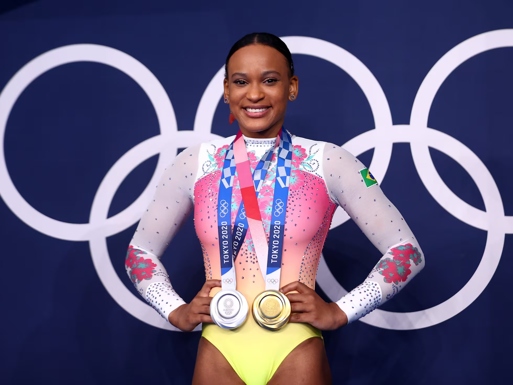
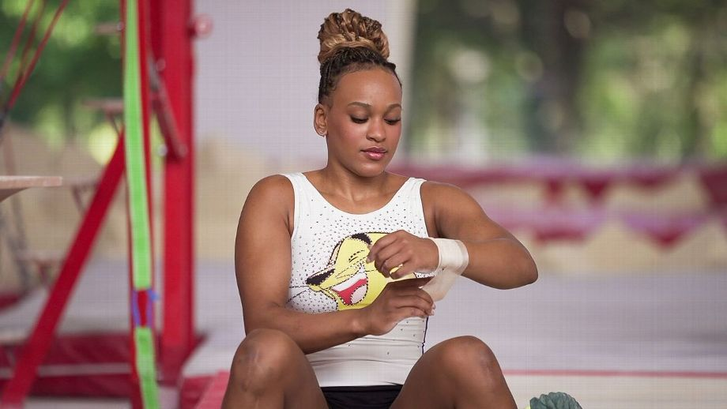

História da Ginastica Artística nas Olimpíadas de 2024
A ginástica artística surgiu nas Olimpíadas modernas em 1896, embora suas raízes remontem à Grécia Antiga. A prática moderna começou no século 19, influenciada por sistemas de treinamento físico. Inicialmente, apenas homens competiam em eventos como solo e anéis. A primeira competição feminina ocorreu em 1928, nas Olimpíadas de Amsterdã. Com o tempo, novos aparelhos foram introduzidos, como a trave de equilíbrio e as barras assimétricas. A popularidade do esporte cresceu, especialmente após os Jogos de 1976, quando Nadia Comăneci recebeu a primeira nota 10 perfeita. Hoje, a ginástica artística é um dos esportes mais admirados nas Olimpíadas.
Trajetória da Rebeca Andrade nas Olimpíadas de 2024

Rebeca Andrade teve uma trajetória impressionante nas Olimpíadas de Paris 2024, onde se destacou como a maior medalhista brasileira da história olímpica, conquistando quatro medalhas: uma de ouro, duas de prata e uma de bronze. Ela brilhou no solo, garantindo a medalha de ouro e superando grandes nomes como Simone Biles e Jordan Chiles. Além disso, Rebeca conquistou a prata no salto e no individual geral, mostrando sua versatilidade. Na disputa por equipes, ajudou a equipe brasileira a conquistar a medalha de bronze. Com esse desempenho, Rebeca se tornou um símbolo de inspiração para muitos brasileiros, provando que determinação e talento levam a conquistas extraordinárias.
Biografia da Ginasta
Rebeca Andrade, nascida em 8 de maio de 1999 em Guarulhos, São Paulo, é uma destacada ginasta artística brasileira e integrante do Flamengo. Começou a treinar aos 6 anos e ganhou notoriedade em 2013 ao se tornar campeã brasileira. Sua carreira alcançou novos patamares em 2021, quando se tornou a primeira ginasta brasileira a conquistar uma medalha de ouro em um campeonato mundial, nas barras assimétricas. Nas Olimpíadas de Tóquio, Rebeca brilhou, conquistando a medalha de prata no individual geral e a medalha de ouro no salto. Ela é uma inspiração para jovens atletas e continua a representar o Brasil em competições internacionais.

Preparação para as Olimpíadas
A preparação de Rebeca Andrade para as Olimpíadas de 2024 em Paris inclui um intenso regime de treinamento físico e mental. Após suas conquistas em Tóquio 2020, ela focou em aprimorar suas habilidades e se recuperar de lesões. Treinando sob a orientação de uma equipe técnica, Rebeca trabalhou em sua técnica, força, flexibilidade e apresentação. Ela também se dedicou à parte psicológica para lidar com a pressão das competições, participando de eventos internacionais para ganhar experiência. Com seu compromisso e determinação, Rebeca se posicionou como uma forte candidata a medalhas em Paris.
